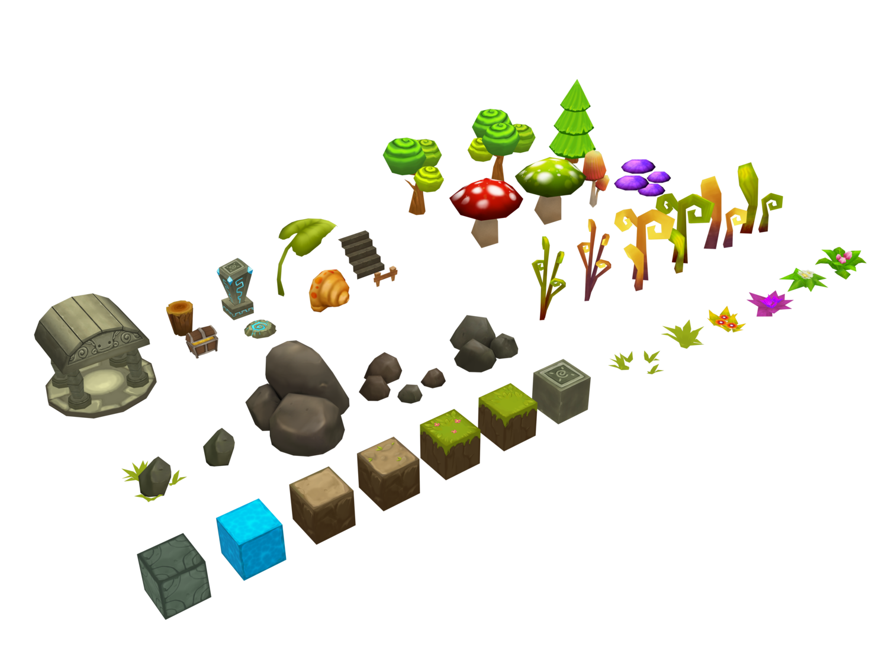
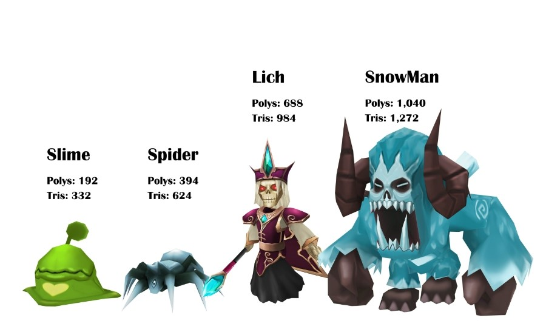
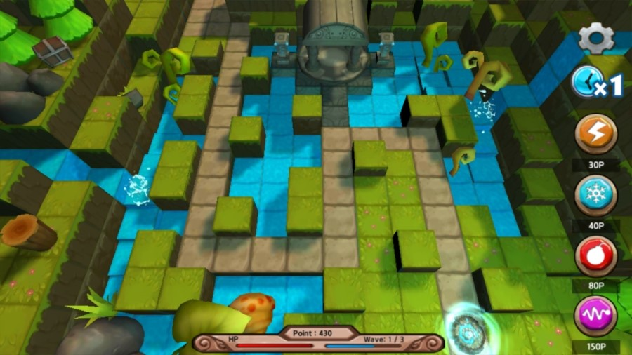

스퀘어디펜스
3인 모바일 게임의 그래픽 제작


프로젝트 소개
타일형 전장, 적과 타워, 이펙트와 UI까지 모바일 디펜스 게임의 그래픽 전반을 담당했습니다.
담당 업무
- 적 캐릭터와 타워 디자인·모델링·텍스처·리깅·애니메이션
- 맵 모델링·텍스처·라이트맵
- 이펙트·UI 제작 및 그래픽 소스 제공
기여 범위 및 사용 리소스
- 게시물 기준 2016-04-16 Google Play 등록. 현재 서비스·다운로드 상태는 미확인.
기술 및 툴
확인된 제작 정보
- 프로젝트 개발 · 2016-02-01 ~ 2016-04-15 · 3인
Gallery
캐릭터·환경 에셋의 인게임 적용
로우폴리 적 캐릭터와 환경 프랍이 같은 타일 전장에서 어떻게 보이는지 확인할 수 있습니다.



